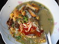

MOHINGA
|  Mohinga (Burmese: မုန့်ဟင်းခါး; MLCTS: mun. hang: hka:, IPA: [mo̰ʊɴhɪ́ɴɡá]) is a rice noodle and fish soup from Myanmar and is an essential part of Burmese cuisine. It is considered by many to be the national dish of Myanmar. It is readily available in most parts of the country. In major cities, street hawkers and roadside stalls sell dozens of dishes of mohinga to the locals and passers-by. Usually eaten for breakfast, today the dish is being consumed more and more throughout the day. The unofficial national dish of rice vermicelli in fish broth with onions, garlic, ginger, lemon grass and sliced tender core of banana-stem, served with boiled eggs, fried fish cake (nga hpe) and fritters (akyaw). |
Ingredient: 1 tbs vegetable or canola oil, 1 onion, finely diced, 1 tsp ginger, crushed, 1 tsp turmeric, 2 tbs shrimp paste, 2 red chillies, chopped, 60g (2oz) banana stem, sliced thinly, 2 stalks of lemongrass, sliced thinly, 675ml (3 cups) fish stock, 50g (2oz) gram flour, 50g (2oz) rice, toasted and ground, 500g (1lb) dried thin rice noodles, 200g (7oz) firm white fish, such as haddock, pollack or sea bass, sliced, lime wedges, fried onions, extra chopped chillies and fresh coriander leaves (cilantro) to serve, Step: 1.Heat the oil in a saucepan and fry the onion, ginger, turmeric, shrimp paste, chillies, banana stem and lemongrass until the onion has softened. 2.Add the stock and whisk in the gram flour and toasted rice. Simmer for approximately 15 minutes until the soup has thickened. Add the rice noodles and continue simmering until the noodles are cooked. Add the fish and cook for a further five minutes. 3.Serve immediately with a wedge of lime and garnished with fried onions, chopped chillies and coriander leaves. |